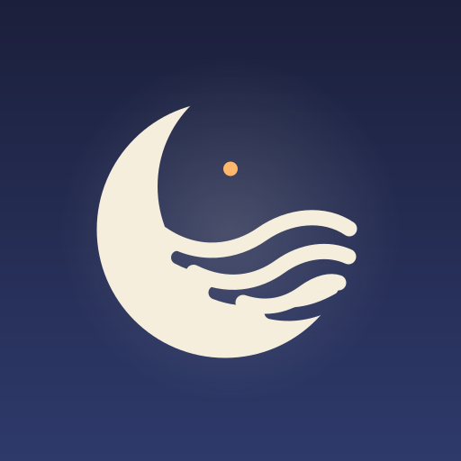
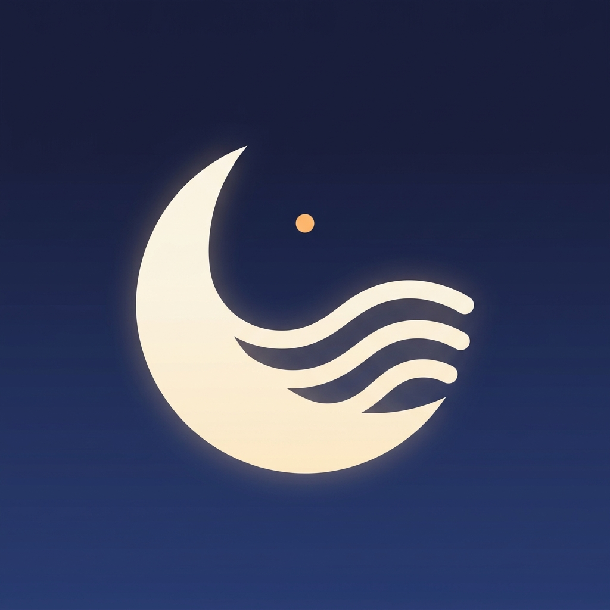

쉼 (Hush) — 아이콘 시트
런처 아이콘(Adaptive Icon) · 상태바/알림 아이콘(백그라운드 재생) · 크기별 가독성 확인
1. 런처 아이콘 — 기기별 마스크

Circle (Pixel)Squircle (Samsung One UI)
Rounded Square
Full bleed 108dp (원본)

AI 콘셉트 아트 (레퍼런스)
2. 홈 화면 가독성 (실사용 크기)
3. 백그라운드 재생 아이콘 (상태바 / 알림 small icon, 24dp 흰색 단색)
ic_stat_playing — 재생 중
ic_stat_timer — 자동 꺼짐 예약 중
12:455G ▮▮▮ 82%
12:455G ▮▮▮ 82%
상태바 실제 크기 (다크 / 라이트)
※ Android 5.0+ 알림 small icon은 알파 채널만 사용되므로 반드시 흰색 단색 + 투명 배경으로 제작. 런처 아이콘의 ‘달+물결’ 실루엣을 그대로 축약해 브랜드 연속성을 유지.